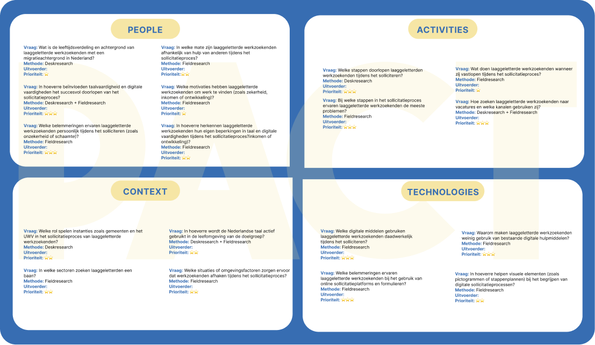

Periode
Periode
Week 3-5
5-18 maart 2026
De eerste stap in onze sprint: desk research inzichten, ontwerpvraag, pact-analyse en stakeholdermap.
 Periode
Periode
Week 3-5
5-18 maart 2026
 Focus
Focus
Onderzoek
User research & analyse
Hoe kunnen we laaggeletterde migranten, tussen de 25 en 45 jaar, ondersteunen bij het sollicitatieproces?
In de packtanalyse hebben we het probleem vanuit vier perspectieven onderzocht: People, Activities, Context en Technology. We hebben gekeken naar de behoeften en uitdagingen van laaggeletterde migranten tijdens het sollicitatieproces, de activiteiten die zij ondernemen, de context waarin dit plaatsvindt en de technologische middelen die beschikbaar zijn. Deze analyse hielp ons om knelpunten en kansen te identificeren, zodat we gerichter oplossingen kunnen ontwerpen die aansluiten bij de doelgroep.
